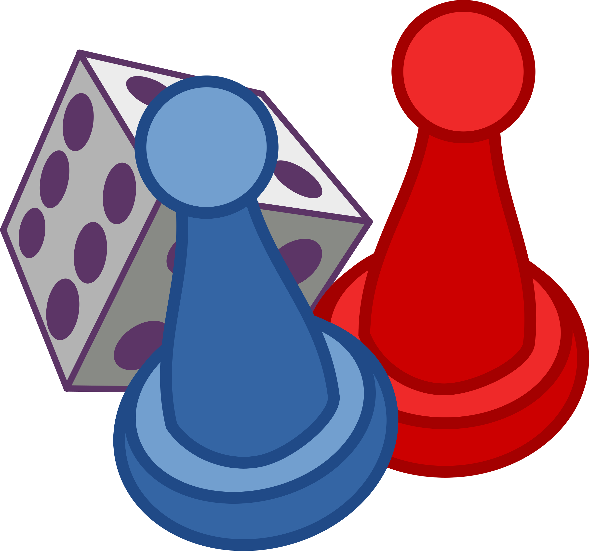

Ludo Game!

Play!
How to play
To enter a token into play from its yard to its starting square, a player must roll a 6. If the player has no tokens yet in play and rolls other than a 6, the turn passes to the next player. Once a player has one or more tokens in play, he selects a token and moves it forwards along the track the number of squares indicated by the die. Players must always move a token according to the die value rolled. Passes are not allowed; if no move is possible, the turn moves to the next player. When a 6 is rolled, the player may choose to advance a token already in play, or may enter another staged token to its starting square. Rolling a 6 earns the player an additional or "bonus" roll in that turn. If the bonus roll results in a 6 again, the player earns an additional bonus roll. If the third roll is also a 6, the player may not move and the turn immediately passes to the next player. Players may not end their move on a square they already occupy. If the advance of a token ends on a square occupied by an opponent's token, the opponent token is returned to its owner's yard. The returned token can be reentered into play only when the owner rolls a 6. Unlike Pachisi, there are no "safe" squares on the game track which protect a player's tokens from being returned. A player's home column squares are always safe, however, since no opponent may enter them.
Games played:
Players online:
Total wins: